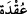
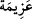
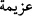
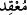
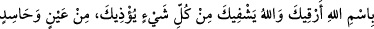

Ukad kelimesi ukda’nın çoğuludur. Sihirbazın üfleyip rukye yaparken hazırlamış
olduğu tel, ip, kıl gibi şeylerdir. __WORD__ ve __WORD__ kelimeleri kök olarak aynı mânâdadır. Onun
için __WORD__ denildiği gibi __WORD__ de denilir. Bu babdan olmak üzere sihirbaza __WORD__ denilir.
Mânâ şöyle olur: İpler üzerine düğüm atıp üfleyen nefislerin veya kadınların
şerrinden… __WORD__ kelimesinin mârife gelmesi, ya ahd-i hâricî için ya da şerrin onların
bütün fertlerine şâmil olması ve kendilerini buna adamalarına işâret içindir.
Burada husûsî olarak zikredilmesinin sebebi ise İbn Abbâs (r.a.) ve Hz. Âişe
(r.anhâ)’dan gelen şu rivâyettir:
Rasûlullah (s.a.) Efendimiz’e bir yahûdî çocuk hizmet ediyordu. Onda Efendimiz’in
tarağından bazı dişler vardı. O dişleri yahûdîlere verdi. Onlar da Allah Rasûlü’ne sihir
yaptılar. -Onun için tırnakları kestikten sonra, saç ve sakallardan tel döküldüğünde
onları iki veya daha fazla parçaya ayırmak gerekir ki, kimse sihir yapamasın-. Bu işi
Lebîd bin A‘sam ve kızları üstlenmişlerdi ki düğümlere üfleyen de o kızlardır. Lebîd
onu Erîs kuyusuna gömdü. Aynü’l-meânî’de bunun Benî Züreyk kabîlesine âid Zâ Ervân
(Zervân) denilen kuyu olduğu bildirilmektedir. Bu hâdise üzerine Nebiyy-i zî-şân
Efendimiz hasta oldu. Bir rivâyete göre hastalık altı ay devâm etti. Bunun üzerine
Cebrâil (a.s.) Muavvizeteyn[269] sûrelerini indirip sihrin nerede kim tarafından ve ne ile
yapıldığını haber verdi.
Rasûlullah (s.a.) Efendimiz Hz. Ali, Zübeyr ve Ammâr’ı (r.a.) gönderdi. Onlar da
kuyunun suyunun boşalttılar, sanki kuyuya kına çalınmış gibiydi. Sonra kuyunun
râûnasını açtılar -ki o da kuyunun altına konulan kaya demektir- ve taşın altından tarak
dişlerini çıkardılar. Yanında iğne ile dikili olarak üzerine on bir düğüm atılmış bir ip
vardı. Onu Efendimiz’e getirdiler. Efendimiz (s.a.) o düğümler üzerine Muavvizeteyn
sûrelerini okumaya başladılar. Her bir âyeti okudukça bir düğüm çözülüyor ve
Efendimiz rahatlıyordu. Her iki sûre tamamlanınca son düğüm de çözüldü. Allah Rasûlü
(s.a.) zincirleri çözülmüş gibi ayağa kalktı. Cebrâil (a.s.) şöyle demeye başladı:
“Sana Allah’ın adıyla rukye yapıyorum, Allah sana eziyet veren her türlü nazar ve
hasedden şifâ verir/versin!” Onun için Allah ve Rasûlü’nün kelâmı ile rukye yaptırmak
câizdir. İbrânîce, Süryânîce, Hintçe bir takım sözlerle rukye yaptırmak câiz olmadığı
gibi onlara inanmak da helâl değildir.
Dediler ki: “Ya Rasûlallah, o habisi öldürmeyelim mi?” Efendimiz de: “Allah bana
sıhhat ve âfiyet verdi. Ben insanlar arasında şerre yol açmak istemem.” [270]
Âişe (r.anhâ) demiştir ki: “Rasûlullah (s.a.) kendi nefsi için gazaplanmamış ve
intikâm almamıştır. Ancak Allah için olan şeylerde gazaplanmış ve intikam almıştır.”
[271]
Bir görüşe göre düğümlere üflemekten kasıt, çeşitli hîlelerle erkeklerin azimlerini
kırmak, onları kararlarından vazgeçirmektir. Bu ifâde, düğümlerin kolay çözülmesi için